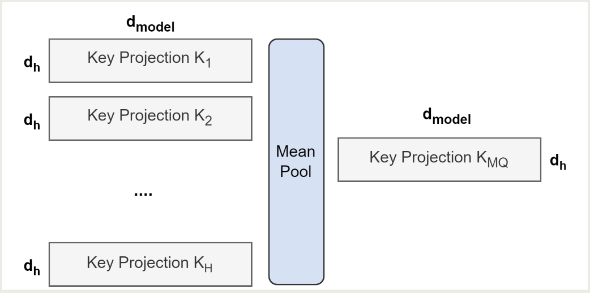

GQA: Training Generalized Multi-Query Transformer Models from Multi-Head Checkpoints
2024-4-5
intro
two contributions:
- method for converting MHA checkpoint to MQA checkpoint
- propose GQA: an interpolation between MHA and MQA
Approach
checkpoint convert
apply mean pool instead of selecting a single kv or randomly initializing
GQA

The quality of GQA is close to MHA when its speed is close to MQA
It cant be applied to encoder which is computed in parallel